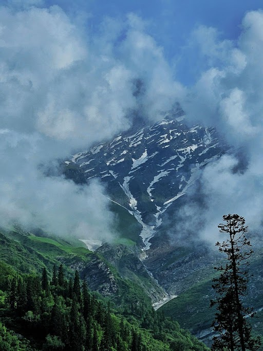
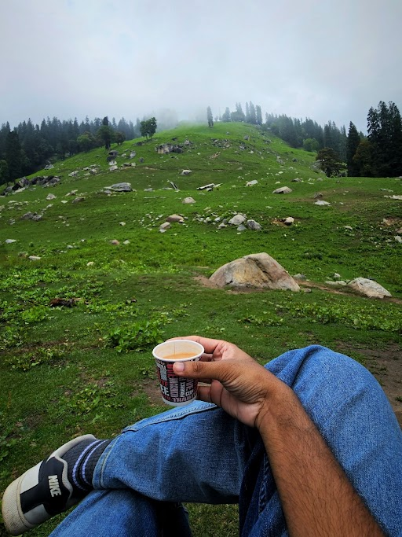
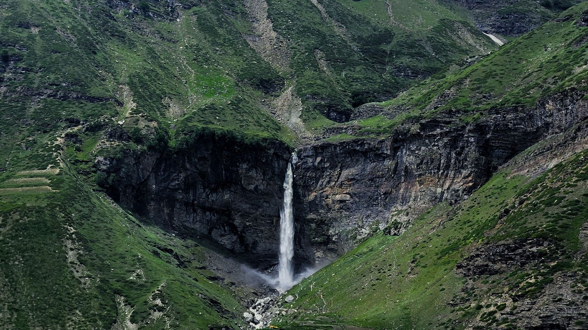
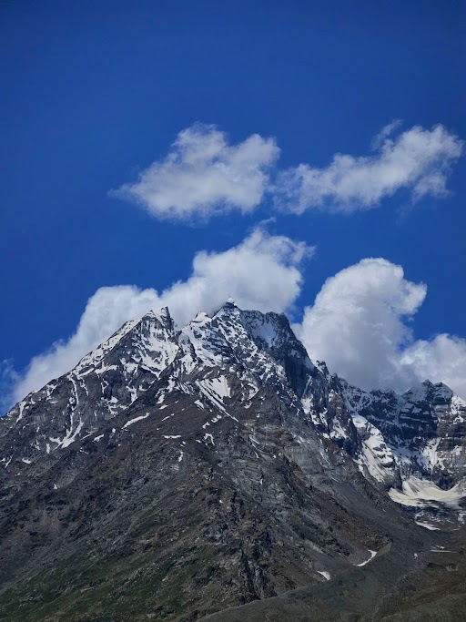
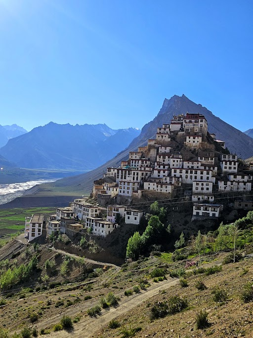
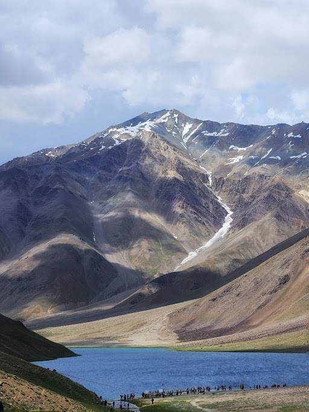
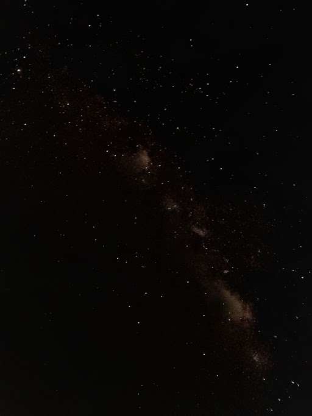
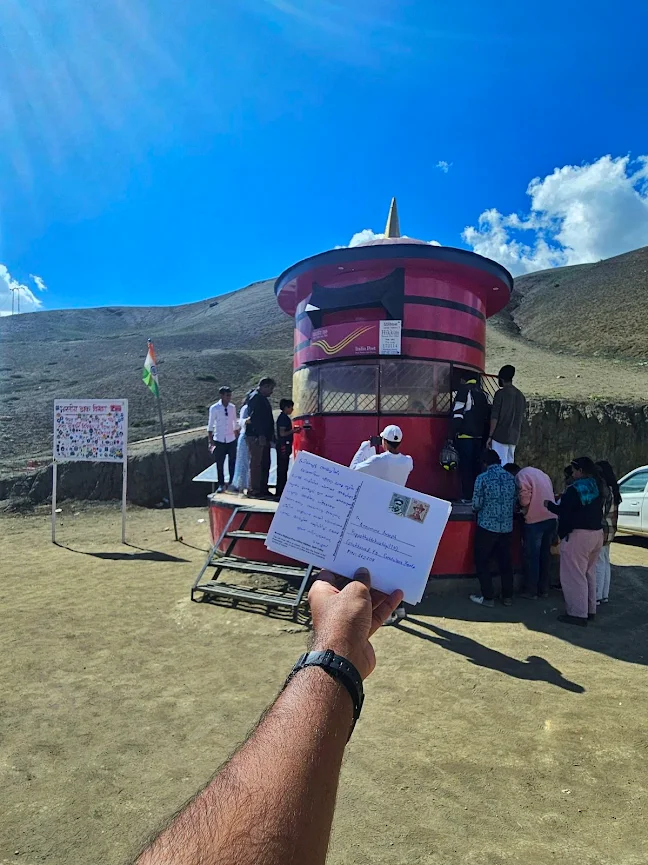
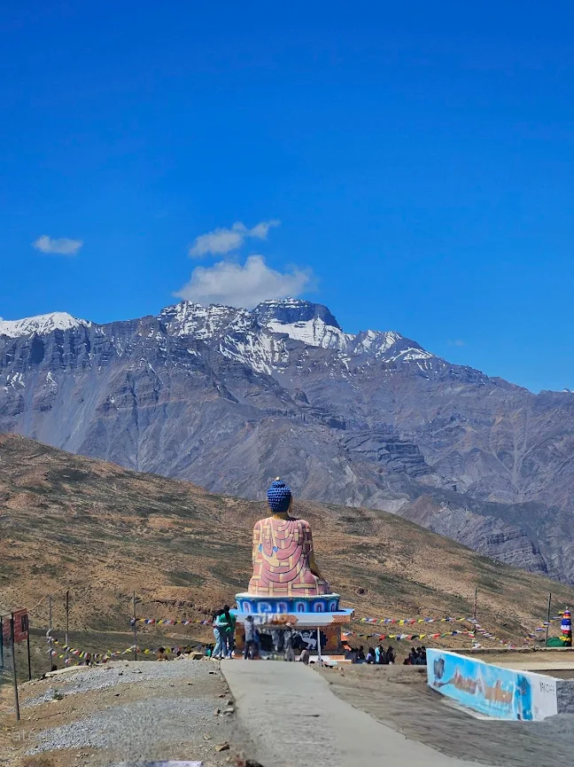

Manali and Spiti valley are located in Himachal Pradesh, India and part of the mighty himalayas. The region is known for its stunning landscapes, snow filled valleys, high altitude passes and unique culture. Manali is a popular hill station and gateway to Spiti, while Spiti is a remote region and one of the world's highest inhabited areas. Our journey was in June which was the trekking season; snow was only present in very high altitudes and rest of the terrain rich in greenery.



Our journey started from Manali, exploring Hadimba temple and Hamta Pass on the first day on rental scooter. There was a short trek on hamta pass and visuals throught the journey was refreshing. At the end of the trek , we reache a valley kinda place, where a local person was serving tea. Having a sip of tea at the valley was definitely more worth than the trek. Second day we rented a royal enfield meteor bike and went to Sissu village and Rohtang Pass. We went through the Atal Tunnel (9 km, World's Longest Highway Tunnel above 10,000 feet) and views throughout the ride was truly mesmerizing. Rohtang pass peak was covered in snow, it was the only place with snow during June which is accesible. We made snowman, threw ice balls and had fun in the snow. Then came the rain and there was no place to take shelter. Rain in snow was a memorable experience and the exciting and difficult part came afterwards; the return ride after being fully soaked. The cold wind during the ride made as shivering. Second day was over and we slept off with the beautiful memories.


Next day we started off at early morning to Kaza. The journey was through Manali - Kaza route which is only open during the June- September. We travelled through HRTC bus and it was full day journey. The road was narrow and there were many water crossings. The road was like a cold desert with no vegetation; only rocks, sand and ice. We reached Kaza by evening and was really tired after the long journey. Kaza is a small village and we stayed at a homestay and the host was very welcoming. Next day we went to Key Monastry, Chicham bridge (Asia's Highest SuspensionBridge), Langza Buddha Statue and Hikkim post office ( World's Highest). The main food options available were momos, chowmein and thupka. We had these items from a small restaurant called Maya's Kitchen and it was realy delicious. We could really feel the altitude and it was difficult to do any physical activity without getting breathless. The day was over and when night begin, I went to the terrace to see the night sky. It was my first time seeing the milkyway arm and I managed to take some photos, despite the chilling cold. The next day we planned to go to Chandratal lake.


We started off next day to Chandratal lake. We had reserved a cab and driver was a chill guy. The road was through the Manali-Kaza route with a detour in between. The journey was around 2-3 hrs and upon reaching the destination, we had to walk more to reach the lake. It was difficult due to the altitude, but once we saw the lake view, all tiredness was gone. The pristine blue waters surrounded by mountains, it was like a perfect painting coming to life. It was a hard to leave place, but we had to leave early in the night it gets really cold. The return journey was an adventure that came unannounced. Just 30 mins before Kaza, there was a landslide due to glacier melting and the road was completely blocked. We had to reach Kaza that night and only option was to cross the landslide by walking. It was already dark and we had to remove our shoes to cross, otherwise it would get stuck. The rubble was mix of sand and ice cold water. With each step, the feet submerged in the rubble and it was a real challenge without light and not knowing the way. After struggle of around 40 mins we finally reached the other side and got to Kaza. The next day was our return; our initial plan was to go return via shillong, but that route was really damaged because of the landslide and closed. The manali route (the one we passed the previous day) was our only option. That road was cleared in the morning quick; thanks to the highway maintenance team. Thus we reached Manali by 8 pm and we had the bus to Delhi at 10 pm. One day and night of surprise adventure and a real sign off to the trip. It was truly a memorable experience.

